install.packages("ggplot2")
library(ggplot2)4 Introdução ao uso do R
4.1 Instalação do R básico
Para usar o R, há necessidade de carregar o programa básico que contém a sua linguagem de programação. O sistema é formado por um programa básico, Graphical User Interface (R-Gui) e muitos pacotes com procedimentos adicionais.
O site oficial do R fornece as versões atualizadas do software e informações sobre este sofisticado projeto de computação estatística.
Para baixar o R, usa-se um “CRAN Mirror”, clicando em CRAN (Comprehensive R Archive Network) na margem esquerda, abaixo de Download. O CRAN é central no uso do R: é o local de onde se carrega o software e todos os pacotes necessários para instalar e para expandir o R.
Em vez de ter um único local, o CRAN é “espelhado” em diferentes locais do mundo. “Espelhado” significa simplesmente que existem versões idênticas do CRAN distribuídas por todo o mundo. É possível baixar o R diretamente da nuvem ou escolher uma origem mais próxima do seu local de atuação. No Brasil, encontram-se várias opções, como a Universidade Federal do Paraná, Fundação Oswaldo Cruz, RJ, Universidade de São Paulo, São Paulo e Universidade de São Paulo, Piracicaba.
Após escolher uma das alternativas acima (pode ser qualquer uma delas) surgirá a página The Comprehensive R Archive Network com as opções para escolher o sistema operacional. Escolha o sistema de acordo com o seu computador (Windows, macOS ou Linux). Ao clicar em uma dessas opções, se o sistema operacional escolhido é o Windows, aparecerá a página R for Windows. Nesta, deve-se clicar em base. No caso de outros sistemas operacionais, seguir as orientações mostradas no site do R.
Clicando em base, haverá um redirecionamento para a página onde aparece a versão do R para o Windows mais atual. Clique no link que diz Download R-…for Window para baixar o instalador em um diretório do computador, em geral Downloads.
Para instalar o programa básico, basta executar o instalador R-…-win.exe baixado no diretório. Ao fazer isso, aparece na tela do computador, no canto esquerdo, em baixo, o arquivo salvo. Execute este arquivo com um clique sobre ele. Aparecerá uma janela perguntando “Deseja permitir que este aplicativo faça alterações no seu dispositivo?”. Clique em Sim. A seguir o instalador pedirá para escolher o Idioma. Selecione Português Brasileiro.
Em sequência aparecerão informações sobre o diretório no qual o R será instalado em seu computador. Recomenda-se aceitar a configuração padrão sugerida pelo instalador do software.
A próxima janela pedirá para personalizar os componentes que serão instalados. Recomenda-se usar as configurações sugeridas pelo instalador que irá reconhecer automaticamente a arquitetura do seu sistema Windows (32 e/ou 64 bits).
A partir daqui, siga as recomendações padrão propostas pelo instalador até completar a instalação, clicando em Concluir.
O R não precisa ser iniciado, pois o software que será usado, neste livro, é o RStudio. Este, para ser executado, necessita ter o R instalado no computador. Ou seja, o R é o programa “cérebro” necessário para as análises de dados que serão realizadas. Ele precisa estar instalado para permitir o funcionamento do RStudio.
4.2 Ambiente de desenvolvimento
4.2.1 RStudio
Um ambiente de desenvolvimento integrado (IDE - Integrated Development Environment) é uma ferramenta que facilita a escrita, execução e depuração de código.
O RStudio é o ambiente de desenvolvimento integrado mais utilizado com o R. Ele serve para facilitar a escrita, execução e depuração de código R, bem como para gerenciar projetos, visualizar dados e criar gráficos. O RStudio é um membro ativo da comunidade R. Foi fundado em 2009 por Joseph J. Allaire, engenheiro de software americano. O RStudio, inspirado pelas inovações dos usuários de R em ciência, educação e indústria, desenvolveu ferramentas gratuitas e abertas para facilitar o uso do R. O RStudio é escrito em linguagem C++ e foi inicialmente focado apenas na linguagem R. Com o tempo, desenvolveu suporte para Python e VSCode. Em 2022, para acompanhar essa mudança, foi anunciada a mudança do nome da empresa que o desenvolve para Posit e, em 2024, lançado um novo IDE multilíngue denominado Positron (1). O Positron é construído sobre o VS Code e oferece suporte nativo tanto ao R quanto ao Python em um único ambiente. Embora já seja bastante funcional e continue em desenvolvimento ativo (2), o RStudio permanece a escolha principal para usuários focados exclusivamente em R, em razão de suas ferramentas específicas para essa linguagem.
4.2.1.1 Instalação do R Studio
Para instalar o RStudio, acessar o site e clicar em Download para obter a versão desejada. Recomenda-se a versão RStudio Desktop – Open Source License que é gratuita. Esta versão entrega as ferramentas integradas para o R.
A seguir, aparecerão os instaladores disponíveis, conforme a plataforma suportada pelo seu computador. As mais utilizadas são Windows e Mac OS X. Neste livro, como base, serão mostrados os passos para a plataforma Windows1.
1 A instalação para Mac OS X pode ser facilmente obtida em busca do Google. Depois de instalado, o uso do RStudio não difere do Windows
2 Disponível em junho de 2026
Em sequência, executar o instalador baixado RStudio-2026.05.0-218.exe 2 e seguir as suas instruções.
4.2.1.2 Iniciando o RStudio
Para iniciar o RStudio basta clicar no ícone indicativo (Figura 4.1) que se encontra no menu Iniciar do Windows.
O RStudio abre como mostrado na Figura 4.2. O RStudio é uma interface mais funcional e amigável para o R. Contém um conjunto de ferramentas integradas projetadas para ajudá-lo a ser mais produtivo com o R.
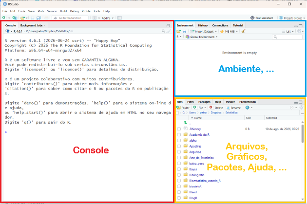
Inclui o Console, editor que suporta execução direta de códigos e uma variedade de ferramentas robustas para plotagem, exibição de histórico, depuração e gerenciamento de seu espaço de trabalho incluídos em uma interface que está, inicialmente, dividida em 3 paineis:
- Console
- Environment, History, Connections, Tutorial
- Files, Plots, Packages, Help
Console e R Script
Do lado esquerdo fica o Console (Figura 4.2, em vermelho), onde os comandos podem ser digitados e aparecem os resultados da execução dos comandos. Ao abrir o RStudio, vê-se no Console uma série de informações sobre o R, como versão em uso e, por último, o diretório onde está armazenado o espaço de trabalho (workspace). Estas informações podem ser facilmente apagadas, clicando na barra de ferramentas, no menu Edit, e após em Clear Console ou, usando as teclas Ctrl+L.
O Console é a principal parte do R. Aqui é onde o R realmente executa o comando. No início do Console, existe um caractere (>). Este é um prompt que informa que o R está pronto para receber um novo código. Pode-se digitar o código diretamente no Console após o prompt e obter uma resposta imediata. Por exemplo, se for digitado 1 + 1 e pressionado Enter, o R imediatamente gera uma saída de 2 (Figura 4.3).
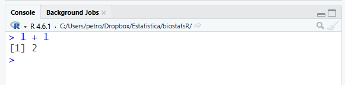
Recomenda-se que a maior parte dos comandos sejam digitados no bloco de notas do RStudio, o R Script. Reservar o Console apenas para depurar ou fazer análises e cálculos rápidos. A razão para isso é simples: se o comando for digitado diretamente no Console, ele não será salvo e se for cometido um erro na digitação, haverá necessidade de digitar tudo novamente. Portanto, é melhor escrever os comandos no Rscript e, quando estiver pronto para executar, enviar para o Console.
O Rscript é o quarto painel do RStudio e seu bloco de notas. Ele é criado através do menu File > New File > R Script ou clicando no botão verde com o sinal (+), na barra de ferramentas de acesso rápido, na parte superior à esquerda. Ao criar um novo R Script será aberto o painel do bloco de notas (Figura 4.4, em verde).
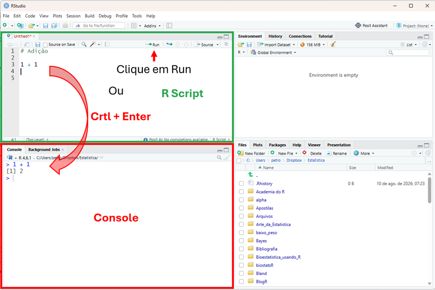
Um diferencial do RStudio é que os comandos são autocompletáveis (Figura 4.5). Basta começar a escrever o comando, inserindo 3 ou mais caracteres, por exemplo, summ referente a função summary (), usada para sumarizar um conjunto de dados, e surge um menu de opções, facilitando a digitação.
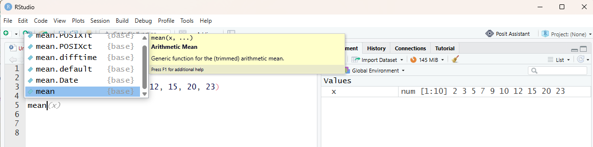
Após digitar no Console, para que seja executado o comando há necessidade de clicar na tecla Enter; no RScript, clicar em Run, acima, na barra, no lado direito, ou usar o atalho Ctrl + Enter (Figura 4.4). Textos podem ser copiados e colados no script e linhas em branco podem ser inseridas. Além disso, no final da sua sessão, é possível salvar o arquivo, que poderá ser recarregado no futuro, se precisar refazer a análise.
Os scripts do RStudio são apenas arquivos de texto com a extensão (.R). Quando se cria um R Script, aparece como Sem título (Untitled) (Figura 4.5). Antes de começar a digitar um novo script no RStudio, recomenda-se salvar o atual com um novo nome de arquivo. Dessa forma, se algo no computador falhar durante o trabalho, o código ficará protegido.
Além da digitação de comandos, o R Script permite fazer comentários onde tudo que for escrito, após o símbolo \(\#\) (Figura 4.4), não é considerado, é apenas uma explicação, um esclarecimento. Os comentários são literais, escritos diretamente para explicar o comando executado. São repetidos na saída do Console sem aparecer nos resultados.
Ambiente, História, Conexão e Tutorial
No lado superior direito há um painel com quatro abas (Figura 4.2, em azul):
Ambiente (Environment) - onde ficam armazenados os objetos criados, as bases de dados importadas, etc., na sessão ativa. É possível visualizar informações como o número de observações e linhas dos bancos de dados ativos. A guia também tem algumas ações clicáveis, como Import Dataset, que permite importar arquivos csv, Excel, SPSS, etc.
História (History) - onde fica o histórico dos comandos executados no Console. Estes comandos podem ser pesquisados nesta guia. Os comandos são exibidos em ordem (mais recentes na parte inferior) e agrupados por bloco de tempo.
Conexões (Connections) - mostra todas as conexões feitas com fontes de dados suportadas e permite saber quais conexões estão ativas no momento. O RStudio suporta múltiplas conexões de banco de dados simultâneas.
Tutorial - a partir da versão 1.3, o R Script ganhou um painel Tutorial dedicado, usado para executar tutoriais que ajudarão você a aprender e dominar a linguagem de programação R. Na primeira vez que se abre o programa, clicando nesta aba, o RStudio solicita que seja instalado o pacote
learnr(Figura 4.6). Isto permite acesso a vários tutoriais úteis que merecem ser explorados.
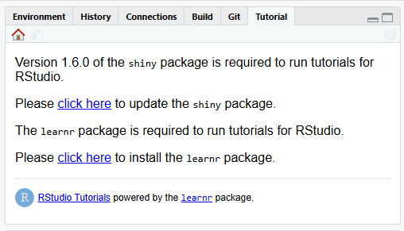
Arquivos, Gráficos, Pacotes, Ajuda e Apresentação
No lado direito, abaixo, existem outras abas muito úteis (Figura 4.2, em amarelo):
Arquivos (Files) - esta guia dá acesso ao diretório onde se encontram os seus arquivos. Um bom recurso do painel Files é que se pode usá-lo para definir seu diretório de trabalho. Para isso, clique em More e depois em Set As Working Directory.
Gráficos (Plots) - local onde ficam os gráficos gerados. Existem botões para abrir o gráfico em uma janela separada e exportar o gráfico como um .pdf ou .jpeg.
Pacotes (Packages) - mostra uma lista de todos os pacotes R instalados no seu computador e indica se eles estão atualmente carregados ou não. Pacotes que estão sendo executados na sessão atual, estão marcados, enquanto aqueles que estão instalados, mas ainda inativos, estão desmarcados.
Ajuda (Help) - menu de ajuda para as funções R. Você pode digitar o nome de uma função na janela de pesquisa (por exemplo,
meanou usar o?mean), no Console ou no R Script, para procurar ajuda sobre uma função (Figura 4.7). A Ajuda no R Studio pode também ser acessada no menu Help da barra de ferramentas onde existem várias opções. Para complementar, alguns livros são muito úteis, como o R Cookbook (3) ou Using R for introductory statistics (4). No entanto, na maioria das vezes, a forma mais prática de conseguir ajuda com uma dúvida específica é a busca em fóruns na internet, como o Stack Overflow: https://stackoverflow.com/.Apresentação (Presentation) – é visualizador de apresentações. Nas últimas versões do Rstudio, é possível com o Quarto, editar um código em R Markdown para construir uma apresentação. Não faz parte do objetivo deste livro desenvolver este assunto. É possível encontrar um tutorial em https://quarto.org/docs/get-started/hello/rstudio.html.
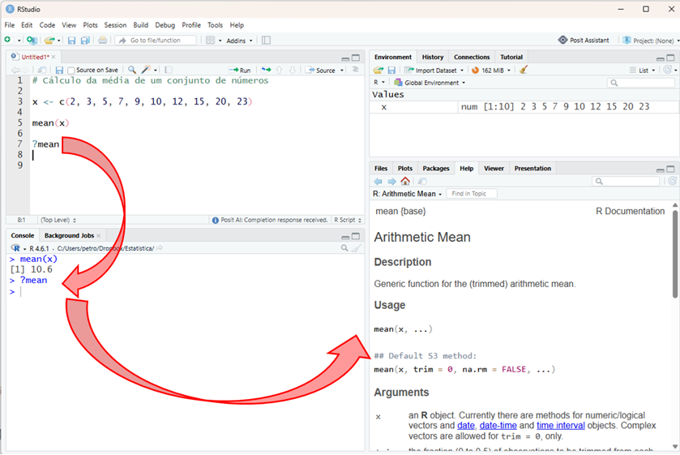
4.2.2 Pacotes
Para que o R possa interagir com o usuário, realizar análises estatísticas e gerar gráficos, a instalação de pacotes é essencial.
Um pacote é um conjunto de funções, dados e documentação que amplia os recursos do R base. O uso de pacotes é fundamental para explorar todo o potencial da ferramenta, sendo sua instalação orientada pelas demandas específicas de cada projeto. Ao instalar o R básico, diversos pacotes já vêm incluídos, permitindo uma ampla gama de análises. No entanto, à medida que o uso do R se aprofunda, torna-se necessário instalar pacotes adicionais desenvolvidos pela comunidade, que oferecem funcionalidades extras por meio de novas funções e comandos.
4.2.2.1 Repositório de pacotes
Quando se identifica a necessidade de um novo pacote, é fundamental saber onde ele se encontra. O principal repositório de pacotes é o CRAN (Comprehensive R Archive Network), já comentado anteriormente. Para acessar este repositório, use o link e escolha um espelho (0-Cloud ou o mais próximo geograficamente). Depois que o pacote for instalado, ele será mantido em sua biblioteca (library) R associada à sua versão principal atual do R. Haverá necessidade de atualizar e reinstalar os pacotes sempre que atualizar uma versão principal do R.
Estando na página do CRAN, no menu, à esquerda, clique em Packages. Isto o colocará na página dos Contributed Packages, onde a maioria dos pacotes podem ser encontrados em Table of available packages, sorted by name. Também é possível clicar em CRAN Task Views, onde estão os pacotes separados por tópicos.
4.2.2.2 Instalação de um novo pacote
Instalar um pacote significa simplesmente baixar o código do pacote em um computador pessoal. Existem duas maneiras principais de instalar novos pacotes. O método mais comum é baixá-los do CRAN, usando a função install.packages(). Dentro dos parênteses, como argumento, coloca-se entre aspas (duplas ou simples) o nome do pacote. Como visto, deve-se, de preferência, digitar o comando no R Script. Por exemplo, para instalar o pacote ggplot2, usado para trabalhar gráficos, se procede da seguinte maneira:
Para carregar o pacote, isto é, para fazer com que suas funções se tornem ativas para uso na sessão, deve-se usar a função library(), como mostrado no comando acima.
Se o RStudio for fechado e reaberto, o pacote deverá ser novamente ativado. Observe que a função library() não requer que o nome do pacote seja digitado entre aspas. Isto acontece porque antes de o pacote ser instalado o R não o reconhece, portanto, há necessidade de indicar o nome (caracteres), para que o R procure na internet o que deve baixar. Já, depois de instalado, o pacote é um objeto conhecido pelo R, logo as aspas não são mais necessárias.
Uma outra maneira de instalar pacotes no R, é usar o botão Install, localizado na aba Packages, no painel inferior, à direita. Clicando em Install, abre-se a caixa de diálogo da Figura 4.8. Digitar em Packages o nome do pacote (ggplot2) e o RStudio completará com opções para achar o pacote. Clicar em ggplot2 e verifique se Install dependencies foi selecionado. A seguir clicar em Install e aguardar aparecer no Console a mensagem que o pacote foi instalado com sucesso.
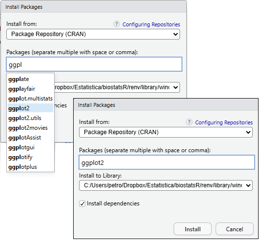
4.2.2.3 Atualização dos pacotes
Periodicamente, há necessidade de atualizar os pacotes instalados. Essa necessidade advém do fato que, com o tempo, os autores de pacotes lançarão novas versões com correções de defeitos e novos recursos e, geralmente, é uma boa ideia manter-se atualizado. Para realizar a atualização, use a função update.packages(), colocando o nome do pacote entre aspas, por exemplo, update.packages("ggplot2").
4.2.2.4 Instalando e carregando mais de um pacote
Uma das funções, atualmente, mais usadas para executar essa ação é fornecida pelo pacote pacman (5).
É interessante configurar o pacman para que ele esteja sempre disponível assim que o R é aberto. Isso é feito editando o arquivo chamado .Rprofile, que é carregado automaticamente toda vez que você inicia uma sessão do R. Para configurar o pacman no .Rprofile, abra-o no RStudio:
file.edit("~/.Rprofile")Adicione o seguinte código:
if (!requireNamespace("pacman", quietly = TRUE)) {
install.packages("pacman")
}
library(pacman)Esse trecho garante que:
- Se o
pacmannão estiver instalado, ele será instalado automaticamente.
- Depois, ele será carregado para uso imediato.
Após esse procedimento, salve o .Rprofile e feche o arquivo. Reinicie o R para que a configuração entre em vigor.
O pacman instala e carrega um ou mais pacotes, através da sua função p_load() da seguinte maneira, não havendo necessidade de escrever o nome dos pacotes entre aspas:
pacman::p_load(readxl, dplyr, ggplot2, car)Além da função p_load(), o pacote pacman tem outras funções, entre elas a função p_update() que atualiza o pacote e, se usada sem especificar o pacote, atualiza todos. Para saber mais sobre o pacote pacman, use a ajuda.
4.2.2.5 Citação de pacotes em publicações
No R existe um comando que mostra como citar o R ou um de seus pacotes. Basta digitar a função citation() no Console ou no R Script e observar a saída. Para um pacote específico, basta colocar o nome do pacote entre aspas, na função.
citation()To cite R in publications use:
R Core Team (2026). _R: A Language and Environment for Statistical
Computing_. R Foundation for Statistical Computing, Vienna, Austria.
doi:10.32614/R.manuals <https://doi.org/10.32614/R.manuals>.
<https://www.R-project.org/>.
Uma entrada BibTeX para usuários(as) de LaTeX é
@Manual{,
title = {R: A Language and Environment for Statistical Computing},
author = {{R Core Team}},
organization = {R Foundation for Statistical Computing},
address = {Vienna, Austria},
year = {2026},
doi = {10.32614/R.manuals},
url = {https://www.R-project.org/},
}
We have invested a lot of time and effort in creating R, please cite it
when using it for data analysis. See also 'citation("pkgname")' for
citing R packages.citation ("ggplot2")To cite ggplot2 in publications, please use
H. Wickham. ggplot2: Elegant Graphics for Data Analysis.
Springer-Verlag New York, 2016.
Uma entrada BibTeX para usuários(as) de LaTeX é
@Book{,
author = {Hadley Wickham},
title = {ggplot2: Elegant Graphics for Data Analysis},
publisher = {Springer-Verlag New York},
year = {2016},
isbn = {978-3-319-24277-4},
url = {https://ggplot2.tidyverse.org},
}4.2.3 Diretório de Trabalho
O diretório de trabalho (Working Directory) é uma pasta onde o R lê e salva arquivos. Deve-se criar um diretório de trabalho para a sessão. Para isso, no RStudio siga o caminho: Session > Set Working Directory > Choose Directory ou use o atalho Ctrl + Shift + H e escolha o diretório desejado ou crie um novo.
Ao finalizar, aparecerá no Console (Figura 4.9):
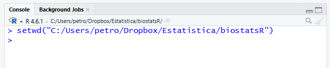
Note que o R usou a função setwd() que significa “definir diretório de trabalho”. Também é possível usar esta função diretamente no R Script ou no Console, digitando conforme o caminho do diretório.
Para saber qual é o diretório de trabalho que está sendo usado pelo R, pode-se executar a função getwd(). A saída no Console mostrará o diretório de trabalho usado, portanto é recomendado que se faça isso no início da sessão para verificar se há ou não necessidade de modificar o diretório.
4.2.4 Projeto
Uma funcionalidade importante do RStudio é a possibilidade de se criar projetos. Um projeto nada mais é do que uma pasta no seu computador. Nessa pasta, estarão todos os arquivos que serão usados ou criados na sua análise.
A principal razão de se utilizar projetos é simplesmente organização. Com eles, fica muito mais fácil importar conjunto de dados para dentro do R, criar análises reprodutíveis e compartilhar o trabalho realizado.
Ao se começar uma nova análise, é interessante criar um Novo Projeto. Para isso, clicar File > New Project ou clicar no menu que está na parte superior, à direita, Project (none) > New Project…. Abrirá a janela da Figura 4.10.
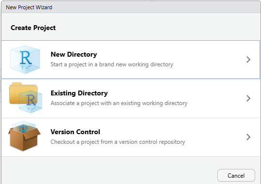
Clique em New Directory para criar um novo diretório. Por exemplo, para as aulas de Bioestatística, pode-se criar um diretório com o nome de bioestatistica ou qualquer outro nome3.
3 Evite acentos, maiúsculas ou caracteres especiais. Seja simples e objetivo, usando nomes que estejam relacionados com o assunto.
Quaisquer documentos Excel ou arquivos de texto associados podem ser salvos nesta nova pasta e facilmente acessados, indo ao menu Project (none) > Open Project…. A partir daí, é possível realizar análises de dados ou produzir visualizações com seus dados importados.
Quando um projeto estiver aberto no RStudio, o seu nome aparecerá no canto superior direito da tela.
Na aba Files, aparecerão todos os arquivos contidos no projeto. Quando se clica no nome do projeto, abre um menu que torna muito fácil a navegação pelos projetos existentes. Basta clicar em qualquer um deles para trocar de projeto, isto é, deixar de trabalhar em uma análise e começar a trabalhar em outra.
4.3 Princípios básicos de uso do R
4.3.1 R como calculadora
O R pode ser usado como uma calculadora desde as mais simples até as mais complexas. Para isso, basta digitar as equações no Console ou no R Script, usando os operadores:
4.3.1.1 Operadores
Operadores são usados para realizar operações com variáveis e valores.
Operadores aritméticos
No R, você pode usar operadores aritméticos para realizar operações matemáticas comuns.
10 + 5 # Adição[1] 15 10 - 5 # Subtração[1] 5 10 * 5 # Multiplicação[1] 50 10 / 5 # Divisão[1] 2 10 ^ 5 # Potência[1] 1e+05 10 %% 3 # Divisão modular (divisão com resto)[1] 1 10 %/% 3 # Divisão inteiro[1] 3Observe que o R repete a operação e coloca em baixo o resultado precedido por [1]. O resultado da operação de exponenciação é exibido como notação científica, onde \(e+05\) significa \(10^5\).
Operadores de atribuição
Operadores de atribuição são usados para atribuir valores a variáveis, como será visto na Seção 4.3.2, adiante.
Operadores de comparação
São usados para comparar dois valores.
# Igualdade
3 == 3[1] TRUE3 == 4[1] FALSE# Não igual (diferente)
3 != 4[1] TRUE# Maior
6 > 3[1] TRUE# Menor
3 < 4[1] TRUE# Maior ou igual
5 >= 3[1] TRUE# Menor ou igual
3 <= 4[1] TRUE
Atenção
Na linguagem R, o sinal de igualdade é escrito com duplo igual (\(==\)).
Operadores lógicos
Operadores lógicos são usados para combinar declarações condicionais:
# Conjunção lógica E, retorna TRUE se ambos elementos são verdadeiros
6 == 6 & 7 == 8[1] FALSE# Conjunção lógica OU, retorna TRUE se um dos elementos é verdadeiro
6 == 6 | 7 == 8 [1] TRUE# Conjunção lógica NÃO, retorna FALSE se o elemento é verdadeiro
!6==6[1] FALSE!2==4[1] TRUE# Operador lógico que verifica se um elemento pertence a um conjunto (%in%)
pares <- c(0, 2, 4, 6, 8, 10)
5 %in% pares[1] FALSEOutros operadores
# Logarítmo natural (base e)
log (10) [1] 2.302585# Logarítmo base 10
log10 (10) [1] 1# Raiz quadrada
sqrt (81)[1] 9# Resultado absoluto
abs (3 - 6)[1] 34.3.2 Objetos
O R permite salvar valores dentro de um objeto. Os objetos são criados utilizando o operador de atribuição (<-). Para digitar este operador, basta teclar o sinal menor que (<), seguido de hífen (-), sem espaços. Existe um atalho que é pressionar Alt + -. O sinal = pode ser usado no lugar do operador <-. No entanto, este é preferível para atribuição de variáveis em R por motivos estruturais. Técnicas de escopo 4 impedem que = crie variáveis persistentes quando utilizado dentro de funções (6), além de ferir as diretrizes contemporâneas de legibilidade do ecossistema (7).
4 Técnicas de escopo (ou regras de escopo) são as diretrizes que determinam onde e quando uma variável existe e pode ser acessada dentro de um código de programação. Elas definem os limites de visibilidade de um objeto para que o sistema saiba exatamente a qual valor se está referindo.
Objeto é um pequeno espaço na memória do computador onde o R armazenará um valor ou o resultado de um comando, utilizando um nome arbitrariamente definido. Tudo criado pelo R pode se constituir em um objeto, por exemplo: uma variável, uma operação aritmética, um gráfico, uma matriz ou um modelo estatístico. Através de um objeto torna-se simples acessar os dados armazenados na memória. Ao criar um objeto, se faz uma declaração. Isto significa que se está afirmando que uma determinada operação aritmética irá, agora, tornar-se um objeto que irá armazenar um determinado valor. As declarações são feitas uma em cada linha do R Script.
Os objetos devem receber um nome e é obrigatório que ele comece por uma letra (ou um ponto) e não é permitido o uso do hífen. Pode-se usar o ponto ou underlines para separar palavras. Deve ser evitado o uso de nomes que sejam de objetos do sistema, ou outros objetos já criados, funções ou constantes. Por exemplo, não deve ser utilizado: c, q, r, s, t, C, D, F, I, T, diff, exp, log, mean, pi, range, rank, var, NA, NaN, NULL, FALSE, TRUE, break, else, if, function, in, while que devem ser reservados, pois têm significados especiais.
Quando se usa um objeto com o nome pi, ele assumirá outro valor diferente de 3,141593. Preservando este nome, toda vez que usarmos a palavra pi, o R assume o valor pré-estabelecido. Além disso, o R faz a diferença entre letras maiúsculas e minúsculas. Ou seja, soma é um objeto diferente de Soma e ambos são diferentes de SOMA.
Para exibir o conteúdo de um objeto, basta digitar seu nome no R Script ou no Console e executar. Em análises mais extensas, verificar se já há um objeto com o mesmo nome, pois seus valores serão substituídos ao executar o novo objeto. Para saber se já existe um objeto com o nome definido, digite as primeiras letras do objeto criado e o R Studio listará, usando a sua função de autocompletar, tudo que começar com essas letras no arquivo. Assim ficará fácil verificar se já existe um objeto com o nome desejado.
No comando abaixo, é criado um objeto que receberá a soma de dez números, utilizando a função sum(). O objeto foi denominado de soma. Para exibir o valor contido no objeto soma, é necessário digitar soma no R Script ou Console e executar:
soma <- sum (2, 3, 12, 15, 21, 4, 8, 7, 13, 21)
soma[1] 1064.3.2.1 Atributos de dados inseridos nos objetos
Os dados inseridos nos objetos pertencem as seguintes classes 5:
5 Atributos de um objeto.
Caracteres (character): são categóricos ou qualitativos. Em geral, são caracteres ou texto. São escritos entre aspas simples ou duplas e não são modificáveis.
Numérico (numeric): são números inteiros (
integer) ou decimais ou ponto flutuante (dbl=double). A sintaxe para o número inteiro é 42L, 3L6, pois se fosse escrito como 42, o R automaticamente o trata como um número flutuante (double).Lógico (logical): são usados para combinar declarações condicionais. Retorna: verdadeiro (TRUE) ou falso (FALSE). São escritos obrigatoriamente com letras maiúsculas sem aspas. São utilizados para indicar opções onde há apenas duas opções ou como resultado de um teste lógico.
6 O L vem da linguagem C, onde long é um tipo inteiro. É uma convenção que o R herdou.
É a partir do conhecimento do tipo de classe que as funções sabem o que exatamente fazer com um objeto. Por exemplo, não é possível somar duas letras e se for feita a tentativa de somar “a” e “b”, o R retorna um erro: Error in “a” + “b”: non-numeric argument to binary operator.
No R, os textos são escritos entre aspas simples ou duplas. As aspas servem para diferenciar nomes (objetos, funções, pacotes) de textos (letras e palavras). Os textos são muito comuns em variáveis categóricas e são popularmente chamados de strings ou character. Além desta classe, o R tem outras classes básicas que são a numeric e a logical. Um objeto de qualquer uma dessas classes é chamado de objeto atômico. Esse nome se deve ao fato de essas classes não se misturarem (8).
Para saber qual o tipo de classe que um objeto pertence, basta usar a função class().
idade <- c(3, 5, 7, 9, 6, 7)
class (idade)[1] "numeric"nome <- c("Pedro", "Maria", "Margarida", "Alice", "João", "Luís")
class(nome)[1] "character"4.4 Funções
A função é uma orientação ao R para que ele execute uma ação que é algum procedimento específico. Em decorrência, em geral, uma função tem um nome sugestivo da ação que ela realiza. Por exemplo, a função mean () realiza a média aritmética de uma série de números. O resultado, como regra geral, deve ser colocado em um objeto que será armazenado na memória do computador.
Esta série de números, concatenados na função c(), é armazenada por um objeto, nomeado x, e posteriormente, se usa a função mean()com este objeto x. O resultado da função mean, exibido no Console, será recebido por outro objeto media_dados e colocado na memória do computador.
dados <- c(2, 3, 5, 7, 9, 10, 12, 15, 20, 23)
media_dados <- mean(dados)
media_dados[1] 10.6De acordo com as necessidades pode-se criar funções pessoais, customizadas. Entretanto, na maioria das vezes, elas são encontradas prontas, fazendo parte de um pacote. Pacotes contêm muitas funções que para serem executadas necessitam que estes estejam instalados e carregados. As funções para exercerem a sua ação devem receber dentro delas (entre parênteses) os argumentos que elas exigem. Os argumentos de uma função são sempre separados por vírgulas.
Para se saber quais argumentos necessários para uma determinada função basta consultar a ajuda, onde se encontrará a documentação da mesma. Para isso basta digitar no Console, no caso da função mean(), help(mean) ou ?mean:
help(mean)O resultado deste comando aparecerá na aba Help, na parte inferior, à direita (Figura 4.7).
Os principais argumentos da função mean() são:
- x \(\to\) vetor numérico
- trim \(\to\) fração das observações (varia de 0 a 0,5) extraída de cada extremidade de x para calcular a média aparada
- na.rm \(\to\) valor lógico (TRUE ou FALSE) que indicam se os valores ausentes (NA) devem ser removidos antes que o cálculo continue
Este último argumento é muito importante quando, na sequência de valores existe algum não informado ou inexistente. No R, eles são denominados de valores ausentes (missing values) e denotados por NA (Not Available).
Por exemplo, em uma coleta de uma série de valores, correspondentes ao peso de 15 recém-nascidos, havendo a “falta” de um dos registros, ao calcular a média com a função mean(), ela retornará NA.
pesoRN <- c (3340,3345,3750,3650,3220,4070,NA,3970,3060,3180,
2865,2815,3245,2051,2630)
mean (pesoRN)[1] NAColocando o argumento na.rm = TRUE, para remover os valores faltantes, a função retornará a média aritmética sem este valor:
mean (pesoRN, na.rm = TRUE)[1] 3227.9294.4.1 Definindo suas próprias funções
Apesar de o R ter centenas (milhares?) de funções integradas que realizam a maioria das tarefas básicas que se precisa, às vezes, pode-se querer criar funções para realizar tarefas específicas ou personalizadas.
4.4.1.1 Estrutura de uma função
Começar definindo o nome da função e os parâmetros de entrada (argumentos da função) que o usuário fornecerá à ela. Em seguida, deve-se definir a operação que deseja programar no corpo da função entre chaves ({}). Por fim, atribui-se o resultado (ou saída) da função na instrução return.
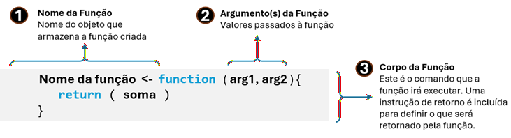
DIca
Não é necessário incluir a instrução return. O R retorna automaticamente qualquer variável que esteja na última linha do corpo da função. Durante a fase de aprendizagem, é interessante incluir explicitamente a instrução return, para marcar bem o processo.
Para exemplificar esse processo, será definida a função coefVar que calcula o coeficiente de variação, medida de dispersão ou variabilidade dos dados em termos relativos. É também conhecido como Desvio Padrão Relativo ou Coeficiente de Variação de Pearson. É expresso, em geral como uma porcentagem, e para obtê-lo multiplica-se por 100 a razão do desvio padrão pela média:
\[CV = \frac{s}{\overline{x}} \times 100\]
No R, definimos a função coefVar atribuindo-o à saída da função. O argumento (x) está contido entre parênteses e é uma sequência de valores numéricos. Em seguida, o corpo da função – as instruções que são executadas quando ela é usada – está contido entre chaves ({}). As instruções no corpo são recuadas em dois espaços, o que torna o código mais fácil de ler, mas não afeta o funcionamento do código. Na função, multiplicamos por 100 para que o resultado já seja em porcentagem.
coefVar <- function (x) {
return (sd(x, na.rm=TRUE) / mean(x, na.rm=TRUE)*100)
}4.4.1.1.1 Usando a função criada
Usar a própria função não é diferente de usar qualquer outra função. Por exemplo, será criado um conjunto de escores de notas de uma turma de Bioestatística:
# Valores para calcular o coeficiente de variação
x <- c(63.1, 76.3, 57.7, 66.9, 73.1, 70.3, 63.6, 75.7, 73.5, 83.0, 73.0, 60.2, 72.8, 77.0, 59.9, 66.3, 74.6, 51.9, 65.5, 63.2)
CV <- coefVar(x)
round(CV,1)[1] 11.4O resultado da função foi atribuído a um objeto, CV, e usada a função round(), nativa do R, para limitar os decimais em apenas um dígito. Caso contrário, o resultado teria 5 dígitos, desnecessários, pois não modifica a informação.
4.4.1.2 Outros exemplos
O Índice de Massa Corporal é igual ao peso (kg) dividido pela \(\text{altura}^2\), em metros. Uma função para fazer este cálculo é:
imc <- function(peso, altura){
res <- peso/altura^2
return(res)
}Logo, o IMC de um indivíduo que tenha 67 kg e 1,7 m é:
peso <- 67
altura <- 1.70
imc(67, 1.70)[1] 23.18339Os exemplos mostrados são muito simples. Quase não haveria necessidade de construir uma função. Entretanto, quando se tem uma ação mais complexa, a função mostra a sua utilidade. Por exemplo, se for necessário realizar a comparação entre duas médias, usando um teste t e apresentar o resultado junto com boxplots, a função fica mais complexa. Sempre que for necessário cálculo semelhante, a função automatiza a ação, sem necessidade de repetir os códigos:
plotBpT <- function(df, var.x, var.y){
library(ggplot2)
library(ggpubr)
library (RColorBrewer)
ggplot(df, aes(x = {{var.x}}, y = {{var.y}}, fill = {{var.x}})) +
geom_errorbar(stat = "boxplot", width = 0.1) +
geom_boxplot() +
scale_fill_brewer(palette = "Greys") +
theme_classic() +
theme(legend.position = "none") +
stat_compare_means(method = "t.test", label.x = 0.5)
}Neste momento, não serão discutidos os códigos da função. Ela será utilizada como uma função qualquer com os dados do arquivo dadosNotas.xlsx 7. Os argumentos da função são o dataframe (df = dados), a variável x (var.x = sexo) e a variável y (var.y = notas). Dessa forma, está se comparando a nota dos alunos de Bioestatística por sexo:
7 Para maiores detalhes, consulte o Capítulo 14.
dados <- readxl::read_excel("dados/dadosNotas.xlsx") |>
dplyr::mutate(sexo = factor(sexo,
levels = c(1, 2),
labels = c("Masculino", "Feminino")))
plotBpT(var.x = sexo, var.y = notas, df = dados)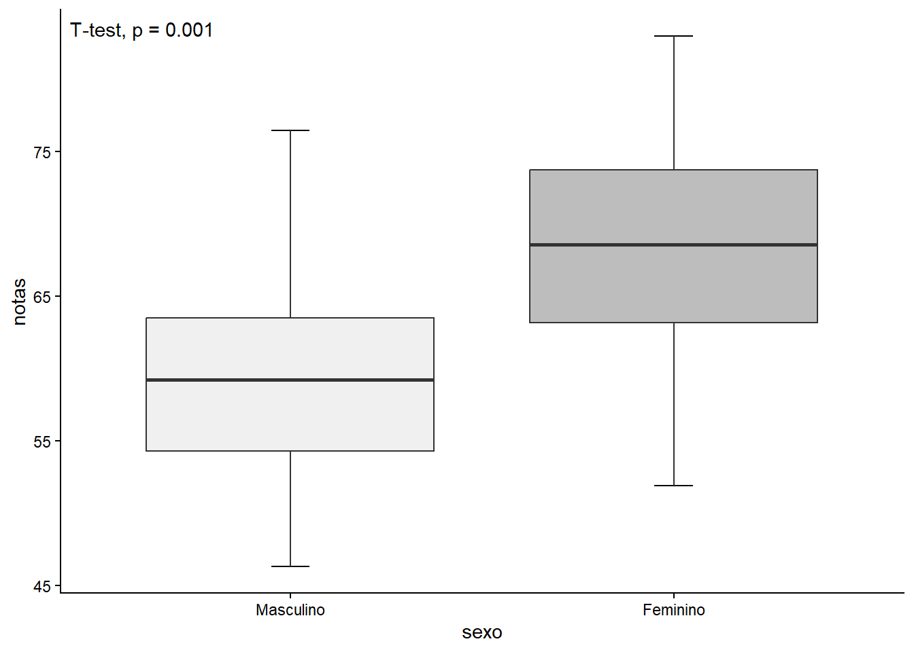
Observe na Figura 4.12 os boxplots, eles têm posições bem diferentes (veja Seção 8.4.3), sugerindo uma diferença nos escores de notas entre homens e mulheres e o resultado do teste t (\(p = 0,001\)) confirma isso. Existe uma diferença estatisticamente significativa (veja também, Capítulo 14).
4.4.1.3 Ativação de uma função criada
Para ativar uma função previamente criada, usa-se a função nativa source (). O argumento desta função é o caminho onde se encontra a função buscada, por exemplo, a função imc() criada acima 8:
8 Este caminho é o do computador do autor.
source("funcoes/imc.R")Outra maneira de ativar uma função é usar a função here do pacote here. É mais robusto porque não depende do diretório de trabalho atual. É útil quando o código é executado a partir de um script em subpasta:
source(here::here("funcoes", "imc.R"))4.5 Vetores
Os vetores (vector) são objetos que armazenam um ou mais elementos, do tipo numeric, character ou logical. Um vetor é uma variável com um ou mais valores do mesmo tipo. Por exemplo, o número de filhos em 10 famílias foi 4, 5, 3, 2, 2, 1, 2, 1, 3 e 2. O vetor nomeado de n.filhos é um objeto numérico. Todo vetor tem duas características: comprimento e nomes dos elementos que podem ser encontradas com as funções length() e names, respectivamente. A maneira mais fácil de criar um vetor é combinar os 10 valores, usando a função concatenar c():
n.filhos <- c(4, 5, 3, 2, 2, 1, 2, 1, 3, 2)
n.filhos [1] 4 5 3 2 2 1 2 1 3 2length(n.filhos)[1] 10names(n.filhos)NULLComo não há nomes no objeto n.filhos, a saída da função names(n.filhos) é NULL.
4.5.1 Indexação de vetores
Como os vetores são conjuntos indexados, pode-se dizer que cada valor dentro de um vetor tem uma posição. Essa posição é dada pela ordem em que os elementos foram colocados no momento em que o vetor foi criado. Isso nos permite acessar individualmente cada valor de um vetor (8).
Para acessar um determinado valor, basta colocar a posição do mesmo entre colchetes [ ]. Se há interesse em conhecer o número de filhos da quinta família, procede-se da seguinte forma:
n.filhos[5][1] 2Se houver tentativa de acessar um valor inexistente, o R retorna NA.
n.filhos[11][1] NASe houver necessidade de excluir um dos elementos, basta colocar entre colchetes a posição do mesmo com sinal negativo. Por exemplo, para excluir o valor correspondente a sexta família, usa-se:
n.filhos[-6][1] 4 5 3 2 2 2 1 3 2Observa-se que o valor 1 foi excluído da série de elementos.
Quando são colocados elementos em um vetor que pertençam a classes diferentes, o R promove o que se denomina de coerção, pois o vetor pode ter apenas uma classe de objeto. Dessa forma, as classes mais fortes reprimem as mais fracas. Por exemplo, sempre que for misturado números e texto em um vetor, os números serão considerados como texto:
vetor <- c(12, 15, 4, 6, "A", "D")
vetor[1] "12" "15" "4" "6" "A" "D" Veja que, agora, todos os elementos do vetor passaram a ser textos e, por isso, estão entre aspas.
4.5.2 Tipos de vetores
Dado um vetor, pode-se determinar seu tipo com typeof(), ou verificar se é um tipo específico com uma das funções: is.character(), is.double(), is.integer(), is.logical().
n.filhos <- c(4, 5, 3, 2, 2, 1, 2, 1, 3, 2)
typeof(n.filhos)[1] "double"is.numeric(n.filhos)[1] TRUEAs expressões do tipo character devem aparecer entre aspas duplas ou simples. Os números no R são geralmente tratados como objetos numéricos (números reais de dupla precisão). Mesmo números inteiros são tratados como numéricos. Para fazer um número inteiro ser tratado como objeto inteiro, deve-se utilizar a letra L após o número.
Os valores lógicos (ou booleanos) são TRUE ou FALSE. T ou F também são aceitos.
n.filhos <- c(4L, 5L, 3L, 2L, 2L, 1L, 2L, 1L, 3L, 2L)
typeof(n.filhos)[1] "integer"is.numeric(n.filhos)[1] TRUEis.double(n.filhos)[1] FALSEnomes <- c('Maria', 'João', 'Manuel', 'Petronio', 'José')
typeof(nomes)[1] "character"is.numeric(nomes)[1] FALSEis.double(nomes)[1] FALSEaltura <- c(1.60, 1.78, 1.55, 1.67, 1.69)
typeof(altura)[1] "double"is.numeric(altura)[1] TRUEis.double(altura)[1] TRUE4.6 Fatores
A classe factor serve para designar categorias para um vetor. Essa classe é semelhante a um vetor da classe character, mas tem importância maior na modelagem estatística e análise exploratória de dados (9). Tanto números quanto caracteres podem ser convertidos em fatores usando a função factor(). Esses fatores podem não ser ordenados, representando apenas diferentes categorias, ou podem representar categorias ordenadas. A função ordered() gera fatores ordenados, em ordem crescente ou decrescente.
O vetor a seguir representa o tipo de parto ocorrido em 15 nascimentos, onde 1 = parto normal e 2 = parto cesáreo:
tipoParto <- c (1,1,2,1,2,2,1,2,1,1,1,2,1,1,1)
tipoParto [1] 1 1 2 1 2 2 1 2 1 1 1 2 1 1 1Verificando a classe desse objeto:
class(tipoParto)[1] "numeric"Como é numérico, teoricamente, seria possível realizar operações matemáticas com ele. Entretanto, sabe-se que os números 1 e 2, representam categorias e, consequentemente, devem ser transformados em fatores, usando a função factor():
tipoParto <- factor(tipoParto,
levels = c(1,2),
labels = c("normal","cesareo"))
tipoParto [1] normal normal cesareo normal cesareo cesareo normal cesareo normal
[10] normal normal cesareo normal normal normal
Levels: normal cesareoclass(tipoParto)[1] "factor"Agora, a variável tipoParto é um fator. Se for utilizada a função table() para ver o número de ocorrências de cada tipo de parto, tem-se:
table(tipoParto)tipoParto
normal cesareo
10 5 4.7 Matrizes
Uma matriz é uma estrutura bidimensional (linhas e colunas) que contém apenas um tipo de dado — geralmente números ou caracteres. É ideal para operações matemática e álgebra linear.
Uma matriz pode ser criada com a função matrix():
m <- matrix(data = 1:6, nrow = 2, ncol = 3)
m [,1] [,2] [,3]
[1,] 1 3 5
[2,] 2 4 6A indexação de uma matriz é feita com [linha, coluna], por exemplo:
m[1,2] # retorna o valor da primeira linha, segunda coluna[1] 34.8 Listas
Uma lista é uma estrutura flexível e heterogênea que pode conter elementos de tipos diferentes, como vetores, strings, funções, até outras listas.
Cada elemento da lista pode ter um nome que pode ser acessado com $ ou [[]]. É muito usado para estruturas complexas, como resultados de modelos estatísticos.
Uma lista pode ser criada com a função list():
lista <- list(aluno = "Gabriel", idade = 14, notas = c(9.5, 8.7, 10, 9.1))
lista$aluno
[1] "Gabriel"
$idade
[1] 14
$notas
[1] 9.5 8.7 10.0 9.1Se o interesse é saber as notas:
lista$notas[1] 9.5 8.7 10.0 9.1É possível calcular a média das notas, usando a função mean():
mean(lista$notas)[1] 9.325Referências
1.
Blog TJR. Positron vs rstudio – is it time to switch? [Internet]. R-bloggers. 2024. Disponível em: https://www.r-bloggers.com/2024/12/positron-vs-rstudio-is-it-time-to-switch/
2.
Posit S. Frequently asked questions [Internet]. Positron. Posit Software, PBC; 2025. Disponível em: https://positron.posit.co/faqs.html
3.
Chang W. Cookbook for R. Cookbook for R. http://www.cookbook-r.com; 2021.
4.
Verzani J. Using R for introductory statistics. Chapman; Hall/CRC; 2004.
5.
Rinker TW, Kurkiewicz D. pacman: Package Management for R [Internet]. Buffalo, New York; 2018. Disponível em: http://github.com/trinker/pacman
6.
R Core Team. R: Operator Syntax and Precedence [Internet]. Vienna, Austria: R Foundation for Statistical Computing; 2026. Disponível em: https://ethz.ch
7.
Wickham H. The Tidyverse Style Guide: Syntax and Assignment [Internet]. 2023. Disponível em: https://style.tidyverse.org/syntax.html
8.
Damiani A, Milz B, Lente C, al et. Ciência de Dados em R [Internet]. R6 Consultoria; 2015. Disponível em: https://livro.curso-r.com/index.html
9.
Wickham H, Grolemund G. 15 Factors|R for data science [Internet]. Welcome | R for Data Science. O’Reilly; 2017. Disponível em: https://r4ds.had.co.nz/factors.html